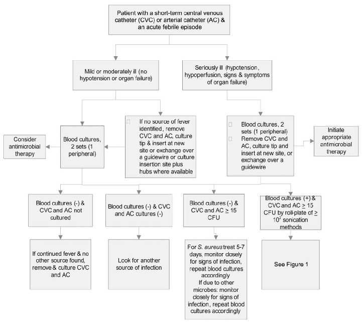
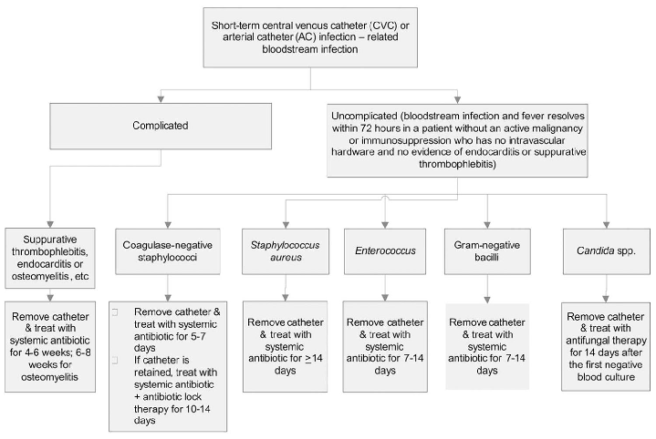
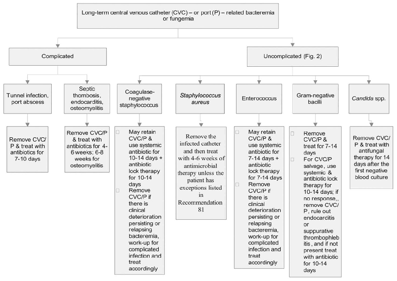
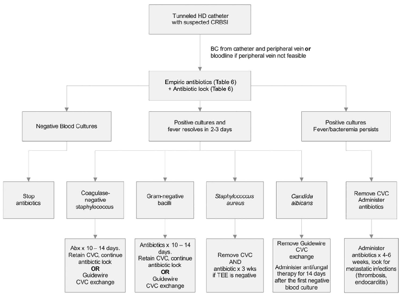

本ページで使用する略語一覧
| 略語 | 正式名称 — 日本語訳 |
| CRBSI | Catheter-Related Bloodstream Infection — カテーテル関連血流感染症 |
| CVC | Central Venous Catheter — 中心静脈カテーテル |
| DTP | Differential Time to Positivity — 培養陽転化時間差（カテーテル血 vs 末梢血） |
| ALT | Antibiotic Lock Therapy — 抗菌薬ロック療法 |
| TEE | Transesophageal Echocardiography — 経食道心エコー |
| TTE | Transthoracic Echocardiography — 経胸壁心エコー |
| MRSA | Methicillin-Resistant Staphylococcus aureus — メチシリン耐性黄色ブドウ球菌 |
| MSSA | Methicillin-Susceptible Staphylococcus aureus — メチシリン感性黄色ブドウ球菌 |
| CoNS | Coagulase-Negative Staphylococci — コアグラーゼ陰性ブドウ球菌 |
| VRE | Vancomycin-Resistant Enterococci — バンコマイシン耐性腸球菌 |
| ESBL | Extended-Spectrum β-Lactamase — 基質特異性拡張型β-ラクタマーゼ |
| MDR | Multidrug-Resistant — 多剤耐性 |
| MIC | Minimum Inhibitory Concentration — 最小発育阻止濃度 |
| cfu | Colony-Forming Units — コロニー形成単位 |
| HD | Hemodialysis — 血液透析 |
| TPN | Total Parenteral Nutrition — 完全静脈栄養 |
| A-I | 強い推奨（A） + 無作為化試験によるエビデンス（I） |
| A-II | 強い推奨（A） + 非無作為化試験・コホート研究等のエビデンス（II） |
| B-II | 中等度推奨（B） + コホート研究等のエビデンス（II） |
| C-III | 弱い推奨（C） + 専門家意見（III） |
疫学・病態生理
Epidemiology & Pathogenesis
疾患概要
米国では毎年1億5000万本以上の血管内デバイスが使用されており、ICUにおけるCVC関連血流感染症は年間約8万件に上る。CRBSIは独立して入院コストを増大させ、在院日数を延長させる。カテーテルの種類・挿入部位・留置期間・患者背景がリスクに影響する。本ガイドラインにおける短期カテーテルは留置14日未満、長期カテーテルは14日以上と定義される。
感染源と主要原因菌
CRBSIの多くは挿入部位またはハブ（あるいはその両方）に由来する。長期カテーテルでは、ハブからの汚染が主要な感染源となる。非術式的に挿入される非カフ型カテーテルでの主要原因菌は頻度順に①コアグラーゼ陰性ブドウ球菌、②S. aureus、③Candida属、④腸内細菌科（腸内細菌目細菌）。外科的に挿入される長期カテーテルやPICCでは①CoNS、②腸内細菌科、③S. aureus、④P. aeruginosaの順となる。
| カテーテルの種類 | 特徴・コメント |
|---|
| 末梢静脈カテーテル | 最も使用頻度が高い短期デバイス。CRBSI リスクは低い |
| 末梢動脈カテーテル | 短期CVC に匹敵するリスクがある（近年の研究より） |
| ミッドラインカテーテル | 抗肘窩から挿入、中心静脈には到達しない。CVC より感染率低い |
| 短期CVC | CRBSI の大多数を占める |
| 肺動脈カテーテル | 平均3日留置。イントロデューサーからの感染が主 |
| PICC | ICU 入院患者では CVC と同程度の感染リスク |
| 長期CVC（Hickman等） | トンネル型・カフ付き。化学療法・在宅点滴・血液透析に使用 |
| 皮下埋め込みポート | 最も感染率が低い完全埋め込み型デバイス |
臨床定義
CRBSI の定義は感染管理のサーベイランス定義（CLABSI）とは異なる点に注意が必要である。CRBSI は治療を目的とした定義であり、より厳密な微生物学的基準を要求する。
| 感染の分類 | 定義 |
|---|
| カテーテル定着 | カテーテルチップ・皮下部位・ハブの定量/半定量培養で有意な増殖（菌血症なし） |
| 出口部感染（微生物学的） | 出口部滲出液から病原体が分離される（菌血症の有無を問わない） |
| 出口部感染（臨床的） | 出口部から2cm以内の発赤・硬結・圧痛（発熱・排膿を伴うことがある） |
| トンネル感染 | 出口部から2cm超のカテーテル皮下経路に沿った圧痛・発赤・硬結 |
| ポケット感染 | 埋め込みポートのポケット内への化膿性貯留（上皮壊死・自然穿破を伴うことがある） |
| CRBSI（確定診断） | ①末梢穿刺血培養＋カテーテルチップで同一菌が検出、または②DTP基準（＞2時間差）・定量培養比（＞3:1）を満たすカテーテル血と末梢血のペア培養 |
第1章 診断：カテーテル培養・血液培養
Diagnosis: Catheter Cultures & Blood Cultures
SECTION 1
カテーテル培養
カテーテル培養 — 基本事項
- 1CRBSI が疑われてカテーテルを抜去する際にカテーテル培養を行う。ルーティンのカテーテル培養は行わない。A-II
- 2カテーテルチップの定性ブロス培養は推奨されない。A-II
- 3CVCでは皮下部分ではなくカテーテルチップを培養する。B-III
- 4抗菌薬コーティングカテーテルを培養する際は、培地に特異的阻害剤を加える。A-II
- 5半定量培養（ロールプレート法）で5cmセグメントから ＞15 cfu、または超音波培養で ＞10² cfu の増殖はカテーテル定着を示す。A-I
- 6カテーテル出口部の滲出液は、グラム染色と培養のために採取する。B-III
短期カテーテル・動脈カテーテル
- 7短期カテーテルチップ培養にはロールプレート法（半定量培養）を推奨する。A-II
- 8肺動脈カテーテル感染が疑われる場合は、カテーテル本体ではなくイントロデューサーチップを培養する。A-II
長期カテーテル・埋め込みポート
- 9挿入部位とハブの両方の培養で同一菌が15 cfu/プレート未満であれば、カテーテルが菌血症の感染源でない可能性が強く示唆される（陰性的中率が高い）。A-II
- 10CRBSI が疑われて皮下ポートを抜去する場合は、チップに加えてポートリザーバー内容物の定性培養も検査室に送付する。B-II
短期カテーテル（留置＜14日）は皮膚常在菌がカテーテル外表面から感染することが多く、ロールプレート法は感度が高い。一方、長期カテーテル（≥14日）ではハブからの管腔内侵入が重要になるため、内腔も採取できる定量培養（超音波法）の感度がより高い場合がある。
SECTION 2
血液培養
血液培養 — 採取と汚染防止
- 11抗菌薬投与前に血液培養を採取する。A-I
- 12可能であれば専任採血チームが血培を採取する（汚染率が低下する）。A-II
- 13経皮採血の皮膚準備は、ポビドンヨードよりもアルコール・ヨードチンキ・アルコール含有クロルヘキシジン（＞0.5%）を用い、十分な接触時間と乾燥時間を確保して汚染を防ぐ。A-I
- 14カテーテルから採血する場合も、ハブをアルコール・ヨードチンキ・アルコール含有クロルヘキシジン（＞0.5%）で消毒し、十分に乾燥させてから採血する。A-I
- 15CRBSI が疑われる場合、カテーテルと末梢静脈からのペア血培を抗菌薬投与前に採取し、採取部位が識別できるようラベルを貼る。A-II
- 16末梢静脈からの採血が不可能な場合は、異なるカテーテルルーメンから≥2セット採血する。すべてのルーメンから採取する必要があるかは不明。B-III / C-III
CRBSI の確定診断基準
CRBSIの確定診断には以下のいずれかを満たす必要がある。
A
カテーテルチップ＋末梢血：少なくとも1本の末梢血培養とカテーテルチップ培養から同一菌が検出される。A-I
OR
B
ペア血培（定量培養比 or DTP）：カテーテルハブと末梢静脈から採取したペア血培が以下のいずれかを満たす：
① 定量培養比：カテーテル血の cfu/mL が末梢血の ≥3倍A-II
② DTP：カテーテル血培の陽転化がカテーテルハブ血で末梢血より ≥2時間早いA-II
OR（possible CRBSI）
C
2ルーメン定量培養：2つのルーメンから採取した定量血培で、一方のコロニー数が他方の≥3倍（possible CRBSIとして扱う）。B-II
重要：定量培養や DTP は抗菌薬投与前に実施すること A-II。DTP は既に抗菌薬を投与中の患者では CRBSI と非 CRBSI を区別できない場合がある。抗菌薬投与終了後のルーチン血培フォローアップのエビデンスは不十分 C-III。
≥15 cfu
ロールプレート法
カテーテル定着の閾値
≥2時間
DTP（陽転化時間差）
カテ血が末梢血より先行

Figure 3. 短期中心静脈カテーテルまたは動脈カテーテルを有する患者で急性発熱が疑われる場合の診断フロー。CFU = colony-forming units.
第2章 一般管理原則
General Management of Catheter-Related Infection
SECTION 3
経験的抗菌薬療法
経験的抗菌薬の選択
- 22抗菌薬の投与期間を数える際、「治療1日目」は血液培養が初めて陰性化した日とする。C-III
- 23MRSA 率が高い施設ではバンコマイシンを経験的治療として推奨する。施設内の MRSA 分離株の大多数が MIC ＞2 μg/mL の場合は、ダプトマイシン等の代替薬を使用する。A-II
- 24リネゾリドは菌血症が疑われるが証明されていない患者への経験的治療として使用してはならない。A-I
- 25グラム陰性菌への経験的カバーは局所の薬剤感受性データと重症度に基づく（第4世代セフェム・カルバペネム・β-ラクタム/β-ラクタマーゼ阻害薬 ±アミノグリコシド）。A-II
- 26好中球減少患者・重篤な敗血症患者・MDR 菌（P. aeruginosa 等）定着者の CRBSI 疑いには、感受性結果が判明するまで2剤グラム陰性菌カバーを行い、その後デエスカレーションする。A-II
- 27大腿静脈カテーテルからの CRBSI が疑われる場合は、グラム陽性菌カバーに加えグラム陰性菌と Candida のカバーも必要。A-II
- 28以下のリスク因子を持つ敗血症患者には Candida 経験的治療を検討する：TPN、広域抗菌薬の長期使用、血液悪性腫瘍、骨髄/臓器移植、大腿静脈カテーテル、複数部位 Candida 定着。B-II
- 29カンジダ血症の経験的治療にはエキノキャンジン（または選択患者ではフルコナゾール）を使用する。過去3ヶ月アゾール未使用かつ施設での C. krusei/C. glabrata リスクが低ければフルコナゾール可。A-II
カテーテル抜去の原則と治療期間
- 30カテーテル温存を試みる場合は抗菌薬ロック療法を使用する。ALT が使用できない場合は感染カテーテルを通じて全身投与する。B-II / C-III
- 31以下の場合は4〜6週の抗菌薬投与（S. aureus は A-II、その他はC-III）：感染性心内膜炎、化膿性血栓静脈炎、小児の骨髄炎、カテーテル抜去後72時間超の持続菌血症/真菌血症。成人の骨髄炎は6〜8週。A-II
- 32長期カテーテルの必須抜去適応：重篤な敗血症、化膿性血栓静脈炎、感染性心内膜炎、適切な抗菌薬投与72時間超の持続菌血症、S. aureus・P. aeruginosa・真菌・マイコバクテリアによる感染。A-II
- 32短期カテーテルの必須抜去適応：グラム陰性菌・S. aureus・腸球菌・真菌・マイコバクテリアによる CRBSI。A-II
- 33カテーテル温存を試みる場合、適切な治療開始から72時間後の血培が陽性であれば抜去する。B-II
- 34Bacillus 属・Micrococcus 属・Propionibacteria 等の低毒性難排除菌では、汚染を複数陽性で除外した上でカテーテル抜去を考慮する。B-III
- 35長期カテーテルが生命維持に必要な患者（血液透析・短腸症候群等）で、S. aureus・P. aeruginosa・真菌・マイコバクテリア以外の非複雑性 CRBSI の場合は、全身投与＋ALT による温存を試みることができる。B-II
- 37ウロキナーゼ等の血栓溶解薬は CRBSI の補助療法として推奨されない。B-I
- 38カテーテルを持つ患者でCoNS単独陽性血培が1本のみの場合は、真のCRBSIかを確認するためカテーテルと末梢の追加血培を行ってから治療を開始する。A-II

Figure 1. 短期中心静脈カテーテルまたは動脈カテーテル関連血流感染症の管理アプローチ。CFU = colony-forming units; S. aureus = Staphylococcus aureus.
第3章 カテーテル種別の管理
Management by Catheter Type
SECTION 4
末梢静脈カテーテル
末梢静脈カテーテル感染の管理
- 39疼痛・硬結・発赤・滲出を伴う末梢静脈カテーテルは抜去する。A-I
- 40免疫不全患者の挿入部位の滲出液は、グラム染色・通常培養に加え、真菌・抗酸菌培養も提出する。A-II
短期末梢静脈カテーテルに伴う静脈炎はカテーテル関連感染と無関係であることが多く、CRBSI のリスク（化膿性血栓静脈炎を含む）は非常に低い。
SECTION 5
非トンネル型 CVC・動脈カテーテル
ICU 新規発熱患者への対応
- 41ICU 入院中に発熱が新規出現したが重篤な敗血症や菌血症のエビデンスがない場合は、カテーテルをルーティン抜去するのではなく、CVC・動脈カテーテル・末梢静脈から血培を採取する。挿入部位とハブの培養も考慮する。B-II / A-II
- 42原因不明の敗血症・挿入部位の発赤・排膿がある場合は CVC と動脈カテーテルを抜去し培養に提出する。B-II
- 43原因不明の発熱で血培陽性・ガイドワイヤー交換後のカテーテルチップに有意な増殖がある場合は、新しいカテーテルを別の部位に挿入する。B-II
臨床的ポイント：発熱のみでは CRBSI の特異度が低く、培養結果が陰性のカテーテルが多数存在する。血行動態が安定し菌血症が確認されていない患者では、カテーテルのルーティン抜去は不要。一方、S. aureus がカテーテルに定着した患者の約25%がその後菌血症を発症するため、早期の抗菌薬介入が重要。
SECTION 6
長期CVC・埋め込みポート（非透析）
長期CVCと埋め込みポートの管理
- 44トンネル感染またはポート膿瘍の患者はカテーテルを抜去し、必要に応じて切開排膿を行い、（菌血症・真菌血症がない場合）7〜10日間の抗菌薬投与を行う。A-II
- 45出口部感染が疑われる患者は、出口部滲出液と血液培養を採取する。A-II
- 46全身感染徴候・血培陽性・排膿のない単純な出口部感染は、培養結果に基づく局所抗菌薬（S. aureus: ムピロシン軟膏、Candida: ケトコナゾール/ロトリミン軟膏）で管理する。B-III
- 47局所治療で改善しない場合や排膿を伴う場合は、感受性に基づく全身抗菌薬投与を行い、失敗すればカテーテルを抜去する。B-II
- 48他の血管アクセス部位がなく、出口部・トンネル感染を伴わない CRBSI でガイドワイヤー交換を行う場合は、抗菌薬含浸カテーテル（管腔内抗菌薬面）の使用を考慮する。B-III / B-II

Figure 4. 長期中心静脈カテーテル（CVC）またはポート（P）関連血流感染症の治療アプローチ。
第4章 小児患者の管理
Pediatric Catheter-Related Infection
小児の特殊性と管理方針
- 49小児のカテーテル抜去適応は成人と同様。ただし代替血管アクセスの困難さ（特に乳幼児）も考慮する。A-II
- 50カテーテル温存中は状態を密接にモニタリングし、臨床悪化や持続/再発 CRBSI があれば抜去する。B-III
- 51小児の CRBSI に対する経験的抗菌薬は基本的に成人に準じる。A-II
- 52カテーテル温存にはALTを使用する。使用できない場合は感染カテーテルを通じて全身投与する。B-II / C-III
新生児CRBSI は非常に多く、1000カテーテル日あたり最大18例に達する。CoNSが34%、S. aureus が25%を占める。新生児では CoNS が51%、次いで Candida・腸球菌・グラム陰性菌の順。Candida CRBSI はカテーテル抜去なしの治療成功率が低く、死亡率が高いため、原則抜去。乳幼児の経験的抗真菌療法（大腿静脈カテーテル）は成人と異なり推奨されない。
第5章 血液透析カテーテル関連感染症
Hemodialysis Catheter-Related Infection
血液透析の特殊性
血液透析患者の CRBSI 管理は特有の課題がある。末梢静脈は将来のシャント作成に温存する必要があるため経皮採血が困難なことが多い。また透析施設はしばしば病院から離れており、医師が常駐していないことも多い。抗菌薬の薬物動態的特性（透析後投与が可能かどうか）や施設の処方集が管理方針を左右する。
血液透析CRBSIの管理推奨
- 53血培採取は将来シャント作成に使用しない静脈（手背静脈等）から行う。A-III
- 54末梢採血が不可能な場合は、透析中に血液回路から採取してもよい。B-II
- 55血培2セットが陰性で他の感染源がなければ抗菌薬を中止できる。B-II
- 57S. aureus・Pseudomonas 属・Candida 属による HD-CRBSI では感染カテーテルを必ず抜去し、別の部位に一時カテーテルを挿入する。代替部位が全くない場合のみガイドワイヤー交換を許容。A-II
- 58カテーテル抜去後、血培陰性確認後に長期透析カテーテルを挿入できる。B-III
- 59Pseudomonas 以外のグラム陰性菌や CoNS による HD-CRBSI は、まず全身抗菌薬投与を開始し即時抜去しなくてよい。2〜3日以内に症状が消失し転移感染がなければガイドワイヤー交換が可能。B-II
- 60症状消失・菌血症消失の患者でカテーテル抜去が不要な場合は、透析後毎回 ALT を追加で10〜14日間行ってもよい。B-II
- 61経験的抗菌薬はバンコマイシン＋局所の細菌感受性に基づくグラム陰性菌カバーを含む。A-II
- 62経験的バンコマイシン使用中に MSSA と判明したらセファゾリンに切り替える。A-II
- 63セファゾリンの透析後投与量は実体重の 20 mg/kg（500 mg単位に丸め）。A-II
- 64持続菌血症/真菌血症（透析カテーテル抜去後＞72時間）・感染性心内膜炎・化膿性血栓静脈炎には4〜6週、骨髄炎には6〜8週の投与。B-II
- 65VRE による HD-CRBSI にはダプトマイシン（6 mg/kg 透析毎）または経口リネゾリド（600 mg 12時間毎）を使用できる。B-II
- 67カテーテルを温存した CRBSI では、抗菌薬終了1週後にサーベイランス血培を採取する。陽性の場合は抜去して血培陰性確認後に新しい長期透析カテーテルを挿入。B-III
血液透析抗菌薬投与量（経験的）
| 薬剤 | 投与スケジュール | 備考 |
|---|
| バンコマイシン |
初回：20 mg/kg 透析最終1時間に点滴
以降：透析ごとに500 mgを最終30分に追加投与 |
MRSA ファーストライン |
| セファゾリン |
20 mg/kg（実体重）透析後（500 mg単位に丸め） |
MSSA 優先薬。バンコより劣らない転帰 |
| セフタジジム |
1 g 透析ごとに静注 |
グラム陰性菌カバー |
| ゲンタマイシン |
1 mg/kg（最大100 mg）透析後 |
不可逆性難聴リスクあり。セファロスポリン優先 |
Candida感染：エキノキャンジン（カスポファンギン70 mg初回→50 mg/日、ミカファンギン100 mg/日、アニデュラファンギン200 mg初回→100 mg/日）、フルコナゾール200 mg/日、またはアムホテリシンB。

Figure 2. トンネル型血液透析カテーテルを使用中の患者におけるCRBSI管理フロー。BC = blood culture; CVC = central venous catheter; TEE = transesophageal echocardiograph.
第6章 抗菌薬ロック療法（ALT）
Antibiotic Lock Therapy
ALTの原理と適応
ALT は長期カテーテル感染において、カテーテル管腔を高濃度の抗菌薬（通常は100〜1000倍MIC濃度）で充填し数時間〜数日間留置することで、バイオフィルム内の細菌を死滅させる治療法である。バイオフィルム内の細菌（sessile bacteria）は浮遊菌（planktonic bacteria）に比べ、抗菌薬を100〜1000倍高濃度にしなければ殺菌できない。管腔内に長期感染がある場合に最も有効であり、管外感染（出口部・トンネル感染）には効果がない。
14件のオープン試験（カテーテル温存＋全身投与のみ）での成功率は平均67%。21件のALT併用試験での温存成功率は77%（vs コントロール群58%）。
- 68出口部・トンネル感染がなく、カテーテル温存が目標である長期カテーテルの CRBSI に適応。B-II
- 69ALT は全身抗菌薬療法との併用で10〜14日間使用する。単独使用は不可。B-II
- 70ロック液の留置時間は原則48時間以内で交換。大腿静脈カテーテルの外来患者では24時間毎に交換が望ましい。透析患者は透析毎に交換。B-II
- 71S. aureus および Candida による CRBSI にはカテーテル抜去を推奨し、例外的状況（代替部位なし）以外は ALT で温存しない。A-II
- 72末梢血培陰性でカテーテル血培のみ陽性（CoNS またはグラム陰性菌）の場合は、全身投与なしの ALT 単独 10〜14日間の選択肢がある。B-III
- 73バンコマイシンのロック液濃度は MIC の少なくとも1000倍（例：5 mg/mL）とする。B-II
- 74エタノールロック療法（CRBSI 治療）を推奨するには現時点でエビデンスが不十分。C-III
抗菌薬ロック液の最終濃度一覧（Table 9より）
以下の組み合わせは沈澱を起こさない。通常ヘパリン50〜100単位/mLまたは生食で希釈し、カテーテル管腔を充填する（通常2〜5 mL）。
| 抗菌薬・濃度 | ヘパリン（IU/mL） | 対象菌種 |
|---|
| バンコマイシン 2.5 mg/mL | 2500 または 5000 | メチシリン耐性ブドウ球菌 |
| バンコマイシン 5.0 mg/mL* | 0 または 5000 | バイオフィルム内S. aureusに5 mg/mLが推奨 |
| セファゾリン 5.0 mg/mL | 2500 または 5000 | MSSA（推奨） |
| セフタジジム 0.5 mg/mL | 100 | グラム陰性菌 |
| シプロフロキサシン 0.2 mg/mL | 5000 | グラム陰性菌（沈澱防止のため濃度上限あり） |
| ゲンタマイシン 1.0 mg/mL | 2500 | グラム陰性菌 |
| アンピシリン 10.0 mg/mL | 10 または 5000 | アンピシリン感性腸球菌 |
| エタノール 70% | なし | 混合感染（グラム陽性＋陰性） |
*バンコマイシン5 mg/mL（10 mg/mLの溶液を1 mL）＋ヘパリン2500 IU/mL（5000 IU/mL 溶液を1 mL）の調製法：バンコマイシン50 mg/mLのバイアルから2 mLを取り、8 mLの生食で希釈し10 mg/mLに調整後、1 mLをヘパリン液1 mLと混合。
第7章 起因菌別の治療推奨
Pathogen-Specific Treatment Recommendations
SECTION 7A
コアグラーゼ陰性ブドウ球菌（CoNS）
CoNS — CRBSI で最多の起因菌
CoNS は CRBSI の最多原因菌であり、大部分はメチシリン耐性を示す。しかし血培での CoNS 単独陽性は最頻度の汚染菌でもある。複数部位での多数陽性血培が真の CRBSI を示す最良の指標となる。多くの症例で臨床経過は良好だが、S. lugdunensis は S. aureus に準じた管理が必要。
- 75単純な CRBSI：カテーテル抜去後5〜7日間の治療、またはカテーテル温存＋ALT で10〜14日間の治療。B-III
- 76血管内デバイス・整形外科インプラントがなくカテーテルを抜去した場合、無症状であれば抗菌薬を使用せず経過観察（追加血培で陰性確認）も選択肢の一つ。C-III
- 77S. lugdunensis による CRBSI は S. aureus に準じた管理を行う。B-II
SECTION 7B
黄色ブドウ球菌（S. aureus）
S. aureus CRBSI — 最も重篤
S. aureus 菌血症患者の25〜30%は血行性合併症（心内膜炎・筋骨格系感染）を発症する。カテーテル抜去の遅延は血行性合併症のリスクを増大させる。菌血症持続72時間（カテーテル抜去・適切な抗菌薬投与後）が合併症の最も一貫した予測因子である。
- 78感染カテーテルを抜去し4〜6週間の抗菌薬治療（下記の例外あり）。B-II
- 79短縮治療（≥14日）を検討する患者には TEE を施行する。B-II
- 80短縮治療（≥14日）の適応条件（全て満たすこと）：非糖尿病患者・非免疫抑制患者（ステロイド・免疫抑制薬非使用・非好中球減少）・カテーテル抜去済み・血管内プロテーゼなし（ペースメーカー・最近挿入の人工血管含む）・TEEと超音波での心内膜炎と化膿性血栓静脈炎の否定・適切な治療開始72時間以内の発熱・菌血症の消失・転移感染なし。A-II
- 81TEEは菌血症発症後5〜7日目に施行する（偽陰性最小化）。B-II
- 82短期カテーテルは S. aureus CRBSI で直ちに抜去する。A-II
- 83長期カテーテルの S. aureus CRBSI では、禁忌（代替アクセスなし・重篤な出血傾向・QOL優先）がない限りカテーテルを抜去する。A-II
- 84長期カテーテルを温存せざるを得ない場合は、全身投与＋ALT 4週間。可能ならガイドワイヤー交換＋抗菌薬含浸カテーテルを使用。B-II
- 85カテーテル抜去後3日以上の発熱・菌血症持続で、初回 TEE 陰性・未排液の転移感染巣がなければ追加 TEE を施行する。A-II
- 86カテーテルチップに S. aureus が培養されるが末梢血培が陰性の場合は、5〜7日間の抗菌薬投与と経過観察を行う。B-II
- 87TTE だけでは感染性心内膜炎を除外できない。A-II
- 88S. aureus CRBSI でカテーテルを抜去した後、追加血培が陰性になってから新しいカテーテルを挿入できる。B-II
25〜32%
S. aureus菌血症で
TEE陽性の弁疣贅
25〜30%
S. aureus菌血症での
血行性合併症発症率
SECTION 7C
腸球菌（Enterococcus species）
腸球菌 CRBSI
腸球菌は院内菌血症の10%を占める。E. faecium の60%、E. faecalis の2%がバンコマイシン耐性（VRE）。VRE CRBSI の多施設研究（>205例）では心内膜炎は1.5%のみ。菌血症が4日以上持続すれば死亡率が独立して増加する。
- 89短期カテーテルは抜去する。B-II
- 90長期カテーテルの抜去適応：出口部/ポケット感染・化膿性血栓静脈炎・敗血症・心内膜炎・持続菌血症・転移感染。B-II
- 91アンピシリン感性腸球菌にはアンピシリンが第一選択、耐性ならバンコマイシン。A-III
- 92心内膜炎のない腸球菌 CRBSI における併用療法（細胞壁作用薬＋アミノグリコシド）の役割は未確定。C-II
- 93単純な腸球菌 CRBSI の治療期間は7〜14日間（長期カテーテル温存＋ALT または短期カテーテル抜去後）。C-III
- 94心内膜炎を疑う所見（新規雑音・塞栓徴候）・72時間超の菌血症/発熱・肺動脈塞栓の画像所見・人工弁/血管内異物があれば TEE を施行。B-III
- 97アンピシリン・バンコマイシン両方耐性（VRE）にはリネゾリドまたはダプトマイシン（感受性に基づく）。B-II
SECTION 7D
グラム陰性桿菌
グラム陰性桿菌 CRBSI
過去20年でグラム陰性菌による血管内デバイス感染は減少し、CoNS・MRSA・Candida が増加した。一方、MDR グラム陰性菌の発生率は増加しており、不適切な初期抗菌薬療法は死亡率・罹患率を増大させる。ESBL 産生 Klebsiella や E. coli に対しては、たとえ in vitro では感受性があっても、カルバペネム以外の治療は臨床失敗のリスクがある。
- 98重篤・敗血症・好中球減少・大腿静脈カテーテル・グラム陰性菌感染巣がある場合はグラム陰性菌への経験的カバーを含める。A-II
- 99MDR グラム陰性菌（P. aeruginosa 等）の最近の定着・感染があれば、2クラスの抗菌薬による初期カバーを行いデエスカレーションする。A-II
- 100長期カテーテルの GNR CRBSI で、全身投与＋ALT にも関わらず菌血症持続・重篤な敗血症があれば、デバイスを抜去し血管内感染・転移感染を精査し、7〜14日を超えた抗菌薬投与を考慮する。C-III
| 病原体 | 第一選択 | 代替 |
|---|
| E. coli / Klebsiella（ESBL陰性） | 第三世代セフェム（セフトリアキソン等） | シプロフロキサシン、アズトレオナム |
| E. coli / Klebsiella（ESBL陽性） | カルバペネム（エルタペネム/イミペネム/メロペネム） | セフェピム、シプロ |
| Enterobacter / Serratia | カルバペネム | セフェピム、シプロ |
| P. aeruginosa | 第四世代セフェムまたはカルバペネム（±アミノグリコシド） | セフェピム、ピペラシリン/TAZ |
| Acinetobacter 属 | アンピシリン/スルバクタム or カルバペネム | — |
| Stenotrophomonas maltophilia | TMP-SMZ（35 mg/kg/日 q8h） | チカルシリン/クラブラン酸 |
| Burkholderia cepacia | TMP-SMZ またはカルバペネム | — |
SECTION 7E
Candida 属（カンジダ血症）
Candida CRBSI — 原則カテーテル抜去
カテーテル温存が転帰を悪化させることが6件の前向き研究すべてで示されている。Candida CRBSI に対しては原則カテーテルを抜去し、全例で抗真菌療法を行う（症状や菌血症が抜去後・治療開始前に自然消失した場合も同様）。
- 101Candida 属による CRBSI ではカテーテルを抜去する。A-II
- 102候補となる感染源が他にない短期 CVC のカンジダ血症：カテーテル抜去＋チップ培養。静脈アクセスが限られる場合はガイドワイヤー交換＋培養。チップに末梢血培と同種 Candida が検出されれば CVC を抜去。A-II
- 103カテーテル抜去前に症状や菌血症が消失した場合でも抗真菌療法を行う。A-II
治療薬：フルコナゾール（C. albicans・アゾール感性株に有効。400 mg/日・初回陰性血培後14日間）= アムホテリシンBと同等。アゾール耐性が懸念される場合（C. glabrata, C. krusei）にはエキノキャンジンまたは脂質製剤アムホテリシンBが有効。
SECTION 7F
その他の起因菌と稀な病原体
その他のグラム陽性菌・稀な病原体
- 104Corynebacterium・Bacillus・Micrococcus 属の CRBSI 診断には、異なる部位から≥2本の血培陽性が必要（汚染との区別）。A-II
- 105これらの菌では短期 CVC を抜去する。長期カテーテルや埋め込みポートも代替アクセスがなければ抜去。B-III
| 病原体 | 第一選択 | 備考 |
|---|
| Corynebacterium jeikeium | バンコマイシン 15 mg/kg q12h | リネゾリドは in vitro 活性に基づく代替 |
| Chryseobacterium属 | フルオロキノロン（レボフロキサシン 750 mg/日） | TMP-SMZ、イミペネム/メロペネム |
| Ochrobactrum anthropi | TMP-SMZ またはフルオロキノロン | シプロ 400 mg q12h |
| Malassezia furfur | アムホテリシンB | 静脈脂質製剤を中止。カテーテル抜去を推奨 |
| Mycobacterium属 | 種によって感受性が大きく異なる | 専門家への相談を推奨 |
第8章 化膿性血栓静脈炎・持続菌血症・感染性心内膜炎
Suppurative Thrombophlebitis, Persistent Bacteremia & Infective Endocarditis
化膿性血栓静脈炎
化膿性血栓静脈炎は中枢・末梢静脈・動脈に及び、高度かつ持続する菌血症/真菌血症を引き起こす。S. aureus が最多原因菌。敗血症性肺塞栓や転移感染を合併することがある。身体所見での診断は困難で、画像検査（CT・超音波）が必要。
- 106適切な抗菌薬投与3日後も血培が陽性で他の菌血症原因（心内膜炎等）がない場合に化膿性血栓静脈炎を疑う。A-II
- 107診断は陽性血培＋画像（CT・超音波等）での血栓確認の組み合わせで行う。A-II
- 108外科的切除は表在静脈の化膿または血管壁外への波及・保存的治療失敗例に限定する。A-II
- 109ヘパリン使用の役割は未確定。C-III
- 110化膿性血栓静脈炎には最低 3〜4週間の抗菌薬投与。B-III
持続菌血症・感染性心内膜炎の管理
- 111カテーテル関連感染性心内膜炎の管理にはカテーテル抜去が必須。A-II
- 112以下のいずれかがある場合に TEE を施行：人工弁/ペースメーカー/埋め込み型除細動器の保有；適切な抗菌薬投与・カテーテル抜去後3日超の菌血症/真菌血症/発熱；4〜6週未満の治療を検討している S. aureus CRBSI。A-II
- 113菌血症/真菌血症発症後1週間以降に TEE を施行（偽陰性最小化）。初回 TEE 陰性で心内膜炎の疑いが高い場合は再検を考慮。B-II
- 115TTE 陰性だけでは感染性心内膜炎を除外できない。B-II
重要：カテーテル抜去後3日以上持続する菌血症/発熱は、化膿性血栓静脈炎・心内膜炎・転移感染巣などの重篤な合併症を強く示唆する。積極的な精査（TEE・CT等）が必要。
第9章 CRBSI アウトブレークの検出と対応
Detecting and Managing an Outbreak of CRBSI
アウトブレーク対応フロー
CRBSI のアウトブレークは頻度が低く気づかれにくい。点滴薬液の汚染（製造工程・病棟での調製・投与時）が最も多い原因。室温で増殖できるグラム陰性菌（Klebsiella・Enterobacter・Serratia・Ralstonia・Burkholderia・Citrobacter 等）が輸液汚染の典型的原因菌。通常の院内感染の臨床像と同一のため、異常なクラスターが検出されない限り見逃されることが多い。
- 116輸液または洗浄液・ロック液の外部汚染が疑われる場合は、公衆衛生当局に報告し、疑われる製品を培養のために確保する。A-II
- 117曝露患者の症例定義（時間・リスク因子・場所）を設定する。A-II
- 118ケースコントロール研究でリスク因子と汚染源を明確にする。B-II
- 119薬剤感受性パターン確認後、分子疫学（PFGE・PCR・MLST 等）で菌の同一性を確認する。A-II
- 120病院薬局と投薬ポイントの感染対策遵守状況を徹底調査（スタッフへのインタビュー・現場観察）。A-II
- 121患者に投与した静脈内薬剤を含む環境の潜在的汚染源の培養を行う。A-II
- 122調査中は新規症例検出のためのサーベイランスを強化する。A-II
- 123感染源特定後も汚染除去の確認のためサーベイランスを継続する。A-II
SUMMARY
IDSA 2009 CRBSI ガイドライン キーメッセージ
①
診断の要点：CRBSIの確定診断にはカテーテルチップ＋末梢血培の一致（A-I）またはDTP≥2時間/定量比≥3:1のペア血培（A-II）が必要。DTPは多くの施設で実施可能であり、長期カテーテルの非抜去診断に有用。
②
S. aureus CRBSI は4〜6週治療が原則：25〜30%が血行性合併症を発症する。TEEは菌血症発症5〜7日後に施行。短縮治療（≥14日）には厳格な適応条件（非糖尿病・非免疫抑制・72時間以内の症状消失・TEE陰性等）がある。
③
Candida・S. aureus・P. aeruginosa はカテーテル抜去が原則：これら3菌種の長期カテーテルでの温存成功率は低く、ALTによる温存は例外的状況（代替アクセスなし）に限定される。カンジダ血症では6件の前向き研究すべてでカテーテル温存が転帰を悪化させた。
④
ALTはバイオフィルム対策：バイオフィルム内細菌は浮遊菌の100〜1000倍の抗菌薬濃度を要する。ALTは全身投与との併用で10〜14日間。バンコマイシンは5 mg/mL（MICの1000倍）の濃度が推奨。S. aureus・Candida へのALT成功率は40〜55%と低い。
⑤
大腿静脈カテーテルのCRBSI疑いにはグラム陰性菌＋Candidaカバーを追加：経験的治療でMRSA率高施設ではバンコマイシン、MRSA MIC＞2 μg/mLではダプトマイシン。リネゾリドは菌血症未確定患者への経験的投与は禁忌（非菌血症患者で死亡率増加の報告）。
出典：Mermel LA, Allon M, Bouza E, et al. Clinical Practice Guidelines for the Diagnosis and Management of Intravascular Catheter-Related Infection: 2009 Update by the Infectious Diseases Society of America. Clin Infect Dis. 2009 Jul 1;49(1):1–45.
DOI：https://doi.org/10.1086/599376
本資料は教育目的で作成したサマリーです。診断・治療方針の決定には必ず原典ガイドラインを参照してください。
制作：ICU 関谷